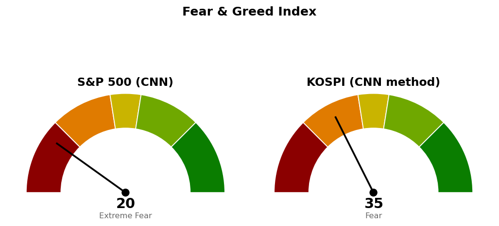

2026-10-23 장전 예측 4건: 4건 중 3건 적중(75.0%)
| 예측 | 근거 | 실제 | 판정 |
|---|---|---|---|
| 코스피 종가 5,451 하회 | 다음 지지 5,451(일봉 종가 판정) — 간밤 나스닥 -1.57%·S&P 500 -0.64%, S&P 500 선물 -1.20% | 종가 5,547 (+0.24%) | 빗나감 |
| 코스피 장중 5,422까지 하락 | 5번 반응한 5,422(저항→지지) — 간밤 미국 기술 업종(XLK) 지수 대비 -2.65%p | 저가 5,306 | 적중 |
| KODEX 반도체, 코스피 대비 약세 마감 | 간밤 마이크론 등 반도체주 급락(MarketWatch)·나스닥 -1.57%, 한국 섹터 20일 초과수익 +0.31%p | -0.66% 대 코스피 +0.24% | 적중 |
| KODEX 헬스케어, 코스피 대비 강세 마감 | 한국 섹터 20일 초과수익 1위 +14.80%p, 미국 헬스케어(XLV) 간밤 지수 대비 +1.46%p | +0.61% 대 코스피 +0.24% | 적중 |
KR 최근 90일 누적 20건 중 7건 적중(35.0%) · 최근 20건 20건 중 7건 적중(35.0%)
빗나간 예측: 코스피는 시가 5,403으로 5,451 아래에서 열려 저가 5,306까지 내려갔으나, 종가 5,547로 장중 고가 5,547과 같은 자리에서 마쳐 5,451을 96포인트 위에서 지켰습니다. 표본은 5세션 20건이라 적중률을 성과로 읽을 수 없습니다.
직전 브리핑은 오늘 장전 회차이며, 10/22 마감 후 회차가 등록한 가격을 그대로 썼습니다.
| 직전 가격 | 판정 방식 | 10/23 결과 | 판정 |
|---|---|---|---|
| 기준선 6,000 | 일봉 종가 상회 | 종가 5,547 · 고가 5,547 | 미충족 |
| 도착지 6,409 | 장중 고가 도달 | 고가 5,547 | 미도달 |
| 다음 지지 5,451 | 일봉 종가 하회 | 저가 5,306 · 종가 5,547 | 지킴 |
| 사다리 1차 5,263 | 장중 저가 도달 | 저가 5,306 | 미도달 (43포인트 위) |
| 취소선 4,900 | 일봉 종가 하회 | — | 해당 없음 |
장전 브리핑은 하방 쪽(종가 5,451 하회)에 걸었고, 장중에는 그쪽으로 갔으나 종가는 반대였습니다. 그 예측은 틀렸습니다. "못 지키면 어디까지"로 걸었던 5,263에는 43포인트 못 미친 5,306에서 멈췄습니다. 어떤 기준선도 종가로 충족되지 않았으므로 직전 계획을 그대로 유지하며 가격도 옮기지 않습니다.
20일선·50일선은 지수이동평균(최근 가격에 무게를 더 둔 평균)입니다.
다음 지지 5,451은 한 세션 안에 닿는 거리이고, 기준선 6,000은 하루 평균 변동폭보다 멉니다. 오늘 저가 5,306은 20일 평균의 0.81배 거래량에서 나왔습니다. 180일 박스 안쪽 판정은 어제 매집 우위에서 오늘 중립으로 바뀌었습니다 — 오늘 저가가 10/15 저점 5,451 아래로 내려가 박스 안 저점이 낮아졌고, 상승봉 거래량은 하락봉의 1.11배입니다. 미국 두 지수는 10/22 종가 기준 나스닥 26,009가 미국 회차의 사다리 취소선 25,967 바로 위, S&P 500 7,663이 기준선 7,701 아래에 있습니다. 월요일 코스피 시가는 오늘 밤 미국장 결과에 먼저 좌우됩니다. 경로를 말할 근거가 없어 이번에는 방향을 말하지 않고 기준선과 두 갈래만 냅니다.
지수가 200일선 아래(-14.00%, 10/13부터)라 이번에는 ETF 스윙 계획을 내지 않습니다. 등록된 ETF 스윙 계획도 없습니다.
한국 섹터는 테마형 ETF 기준이라 미국 업종 ETF와 성격이 다릅니다. 상위 2개는 어제와 같은 헬스케어·2차전지이며, 국면 때문에 두 ETF 모두 스윙 계획 대상에서 빠졌습니다. 2차전지는 20일로는 2위지만 5일은 -5.72%p이고, 5일 기준으로 지수를 이긴 것은 헬스케어와 건설뿐입니다. 미국은 필수소비재(+10.68%p)·유틸리티(+9.45%p)가 20일 상위이고, 기술은 -5.82%p로 최하위입니다.
종목 발굴: 코스피가 200일선 아래라 오늘 한국 후보는 나오지 않았고, 발굴 리포트도 나가지 않습니다.

S&P 500은 CNN 공식값이며 1주 전 22.1, 1개월 전 32.5였습니다. 안전자산 선호 9.6·신고가 대비 신저가 종목 수 17.6·변동성 17.7이 점수를 끌어내렸습니다. 코스피는 CNN 방식을 한국 데이터로 재구성한 값이며 공식 지수가 아닙니다. 기준일은 10/22이고 일곱 항목을 모두 썼습니다. 모멘텀 2.2·안전자산 선호 8.8이 가장 낮고, 풋/콜 86.2가 가장 높습니다.
1. 매수: 지금 5,547은 진입 자리가 아닙니다. 사다리 1차 5,263에 장중 닿으면 계좌의 2%를 지수로 매수합니다. 2. 일봉 종가가 4,900 아래면 남은 회차를 중단하고, 이미 산 회차는 전량 매도합니다 (사다리 취소). 3. 일봉 종가가 6,000 위면 상방 전환으로 판정합니다. 이 계획에 추가 매수 회차는 없습니다. 4. ETF: 200일선 아래라 이번에는 살 자리가 없습니다.
다음 세션에 볼 것: 10/26 일봉 종가가 5,451 위에 머무는지.
ATR(하루 평균 변동폭): 최근 14일 동안 하루에 오르내린 폭의 평균.
상대강도지수(RSI): 최근 14일 오른 폭과 내린 폭의 비율을 0~100으로 나타낸 값.
200일 이동평균: 최근 200거래일 종가의 단순 평균.
20일 초과수익: 최근 20거래일 수익률에서 기준 지수 수익률을 뺀 값.
되돌림선: 직전 상승폭의 50%·61.8%처럼 일정 비율만큼 되돌아온 가격.
신용부도스와프 스프레드: 회사채 부도에 대비한 보험료로, 벌어질수록 부도 위험을 높게 본다는 뜻.